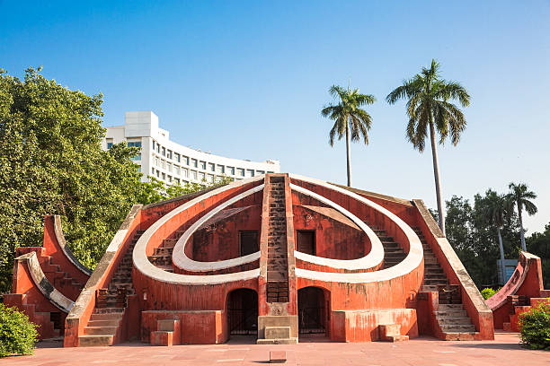

The Taj Mahal (/ˌtɑːdʒ məˈhɑːl, ˌtɑːʒ-/; lit. 'Crown of the Palace')[4][5][6] is an Islamic ivory-white marble mausoleum on the right bank of the river Yamuna in the Indian city of Agra. It was commissioned in 1631 by the Mughal emperor Shah Jahan (r. 1628–1658) to house the tomb of his favourite wife, Mumtaz Mahal; it also houses the tomb of Shah Jahan himself. The tomb is the centrepiece of a 17-hectare (42-acre) complex, which includes a mosque and a guest house, and is set in formal gardens bounded on three sides by a crenellated wall.
The Qutb Minar, also spelled Qutub Minar and Qutab Minar, is a minaret and "victory tower" that forms part of the Qutb complex, which lies at the site of Delhi’s oldest fortified city, Lal Kot, founded by the Tomar Rajputs.[3] It is a UNESCO World Heritage Site in the Mehrauli area of South Delhi, India.[4][5] It is one of the most visited tourist spots in the city, mostly built between 1199 and 1220.

The Red Fort or Lal Qila (Hindustani: [laːlqiːlaː]) is a historic fort in Old Delhi, Delhi in India that served as the main residence of the Mughal Emperors. Emperor Shah Jahan commissioned construction of the Red Fort on 12 May 1638, when he decided to shift his capital from Agra to Delhi. Originally red and white, its design is credited to architect Ustad Ahmad Lahori, who also constructed the Taj Mahal. The fort represents the peak in Mughal architecture under Shah Jahan, and combines Persianate palace architecture with Indian traditions.

The India Gate (formerly known as the All India War Memorial) is a war memorial located near the Rajpath on the eastern edge of the "ceremonial axis" of New Delhi, formerly called duty path. It stands as a memorial to 84,000 soldiers of the British Indian Army who died between 1914 and 1921 in the First World War, in France, Flanders, Mesopotamia, Persia, East Africa, Gallipoli and elsewhere in the Near and the Far East, and the Third Anglo-Afghan War.

The Gateway of India is an arch-monument built in the early 20th century in the city of Mumbai (Bombay), India. It was erected to commemorate the landing of King-Emperor George V, the first British monarch to visit India, in December 1911 at Strand Road near Wellington Fountain.

A Jantar Mantar (Hindustani pronunciation: [d͡ʒən̪t̪ər mən̪t̪ər]) is an assembly of stone-built astronomical instruments, designed to be used with the naked eye. There were five Jantar Mantars in India, all of them built at the command of the Rajah Jai Singh II, who had a keen interest in mathematics, architecture and astronomy; The largest example is the equinoctial sundial belonging to Jaipur's assembly of instruments, consisting of a gigantic triangular gnomon with the hypotenuse parallel to the Earth's axis. On either side of the gnomon is a quadrant of a circle, parallel to the plane of the equator.